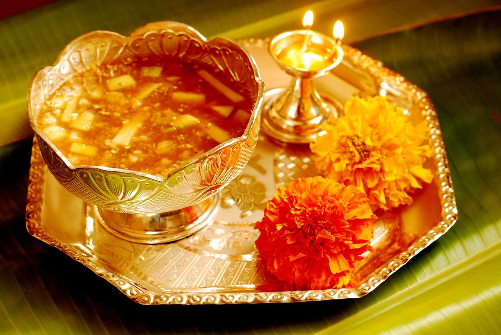
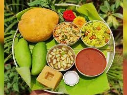
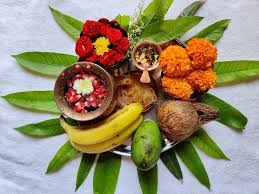

A festival of telugu
Ugadi or Yugadi, also known as Samvatsarādi (meaning "beginning of the year"), is New Year's Day according to the Hindu calendar and is celebrated in the states of Andhra Pradesh, Telangana, Karnataka and Goa in India.[1] We have total 60 Telugu Years, each year has its own name. The day this nakshatra starts is called 'Ugadi'.

The word Ugadi can be split into two, Uga means Course of stars and Adi means Starting. It is festively observed in these regions on the first day of the Hindu lunisolar calendar month of Chaitra.[2] This typically falls in late March or early April of the Gregorian calendar.[2]
It also falls during the Tamil month of either Panguni or Chithrai, sometimes on the day after Amavasya with 27th Nakshatra Revati. Ugadi day is pivoted on the first New Moon after March Equinox.

The day is observed by drawing colourful patterns on the floor called Muggulu, mango leaf decorations on doors called torana, buying and giving gifts such as new clothes, giving charity to the poor, oil massages followed by special baths, preparing and sharing a special food called pachadi, and visiting Hindu temples.[3][4]
The pachadi is a notable festive food that combines all flavors – sweet, sour, salty, bitter, astringent and piquant. In Telugu and Kannada Hindu traditions, it is a symbolic reminder that one must expect all flavors of experiences in the coming new year and make the most of them.[5]
 Followers of the Souramana calendar system observe Ugadi in Karnataka, when the sun transits into the Aries Constellation, which is also the festival of Baisakhi, and is locally known as Souramana Ugadi or Mesha Sankranti.[6]
Followers of the Souramana calendar system observe Ugadi in Karnataka, when the sun transits into the Aries Constellation, which is also the festival of Baisakhi, and is locally known as Souramana Ugadi or Mesha Sankranti.[6]
Ugadi has been an important and historic festival of the Hindus, with medieval texts and inscriptions recording major charitable donations to Hindu temples and community centers on this day.[7] The same day is observed as a New Year by Hindus in many other parts of India, such as Gudi Padwa in Maharashtra and is a national public holiday in Mauritius.

Special dishes are prepared for the occasion. In Karnataka, foods such as Holige or Obattu, and mango pickles are made. In addition, a speciality of yugadi in Karnataka is to create "bEvu-bella" a mixture of neem and jaggery.
This symbolizes life's own experiences with a little bit of bitternes and a hint of sweetness. In Andhra Pradesh, foods such as pulihora, bobbatlu (Bhakshalu/ polelu/ oligale), New Year Burelu and Pachadi, and preparations made with raw mango go well with the occasion.

Of these, pachadi (or Ugadi pacchadi) is the most notable, and consists of a chutney-like dish which combines ingredients to give all six flavours of food (షడ్రుచులు - ṣaḍruculu) : sweet (తీపి - tīpi), sour (పులుపు - pulupu), salty (ఉప్పు - uppu), spicy (కారం - kāraṁ), bitter (చేదు - cēdu) and astringent (వగరు - vagaru).[16]
This festive Hindu food is made from tamarind paste (sour), neem flowers (bitter), brown sugar or sweet jaggery (sweet), table salt (salt), green chilli (spicy) and raw mango (astringent). It is a symbolic reminder of complex phases of life one should reasonably expect in the new year.[15][13][17]